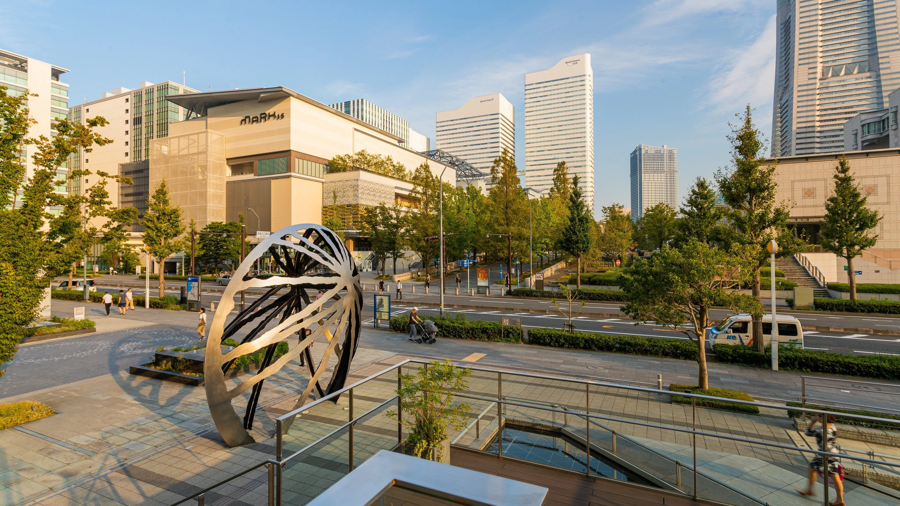
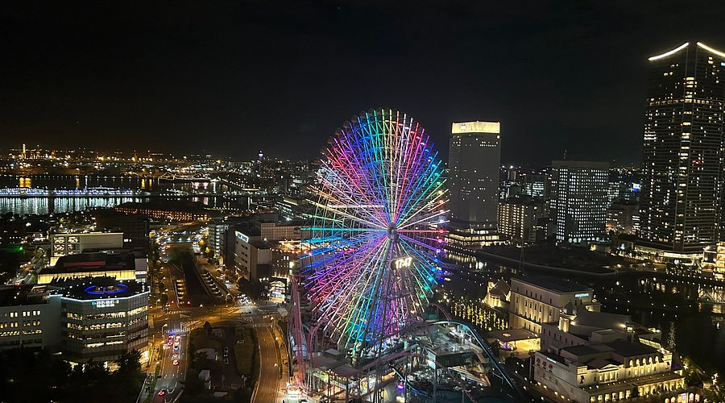

Pontos Turísticos
Minato Mirai 21 (Porto do Futuro)
Minato Mirai 21 é, sem dúvida, o marco mais famoso de Yokohama. Planejada como uma "cidade do futuro", sua arquitetura inclui a imponente Yokohama Landmark Tower, que já foi o prédio mais alto do Japão. Além de sua silhueta moderna que domina a baía da cidade, a área abriga centros comerciais, parques de diversões e o famoso Cosmo Clock 21, uma das maiores rodas-gigantes do mundo que funciona também como um relógio digital gigante.
Minato Mirai é uma das atrações turísticas mais vibrantes da região. O impressionante complexo é impossível de não notar ao caminhar pela baía. Graças ao seu design inovador, é um dos distritos urbanos mais fotografados do Japão.

O distrito de Minato Mirai 21, famoso por sua roda-gigante e arquitetura futurista.
Visite o site Yokohama Japan para ver o guia completo da região.
Yokohama Chinatown (Chukagai)
A entrada principal está localizada próxima ao porto e é marcada por portais coloridos e ricamente decorados (Paifang). A Chinatown de Yokohama é a maior do Japão e uma das maiores do mundo, com centenas de lojas e restaurantes espremidos em ruas estreitas. A visita aos seus templos, como o Kanteibyo, é um destino popular, oferecendo aos visitantes uma imersão na cultura e na arquitetura tradicional chinesa em pleno solo japonês.
Para quem busca a melhor gastronomia de rua, a Chinatown é parada obrigatória. Ela transporta os visitantes para um cenário repleto de lanternas vermelhas, aromas de especiarias e os famosos pães cozidos no vapor (Nikuman). É o local perfeito para observar a celebração do Ano Novo Chinês ou o movimento frenético das barracas de comida durante a noite.

Jardim Sankeien
Yokohama está situada próxima à agitação metropolitana, mas o Jardim Sankeien é um refúgio de paz tradicional. Este vasto jardim japonês apresenta prédios históricos transportados de várias partes do país, incluindo antigos templos e casas de chá. É um cenário de serenidade, onde pontes de madeira cruzam lagos cheios de carpas e as cerejeiras florescem de forma espetacular na primavera, contrastando com o horizonte industrial da cidade.
Você sabia que o Jardim Sankeien é um dos locais mais preservados da herança cultural japonesa em Yokohama? Isso se deve ao seu layout clássico e à preservação de estruturas que datam de centenas de anos. Frequentemente, testemunhamos cerimônias de chá e festivais sazonais aqui. Lembre-se que o jardim é grande, portanto, uma boa caminhada e uma câmera pronta aumentam suas chances de capturar a essência do Japão antigo.

A beleza serena nas águas de Yokohama, o histórico Jardim Sankeien e sua arquitetura clássica.
Confira mais informações e suas variações ao decorrer das estações no site coisasdojapao